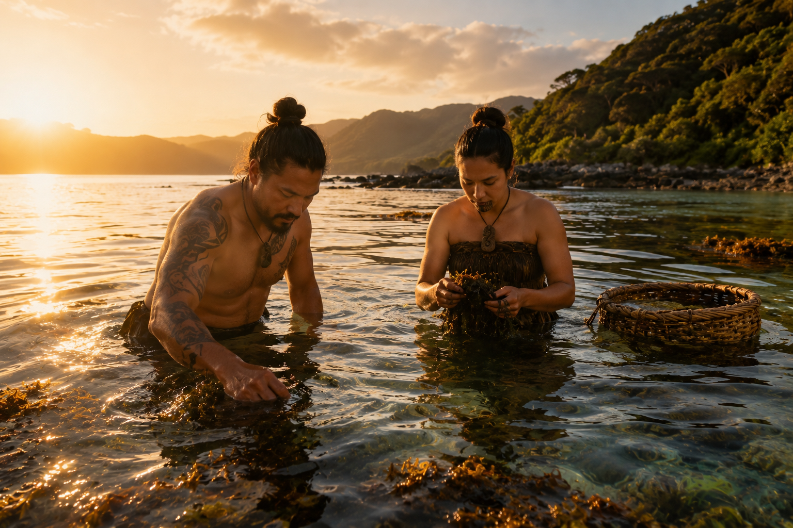
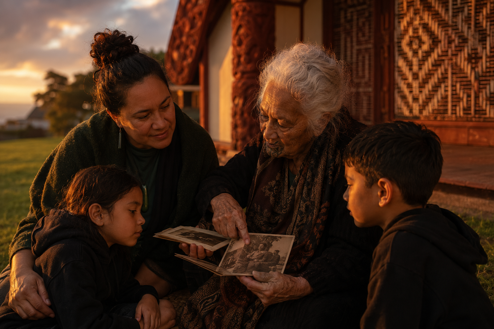
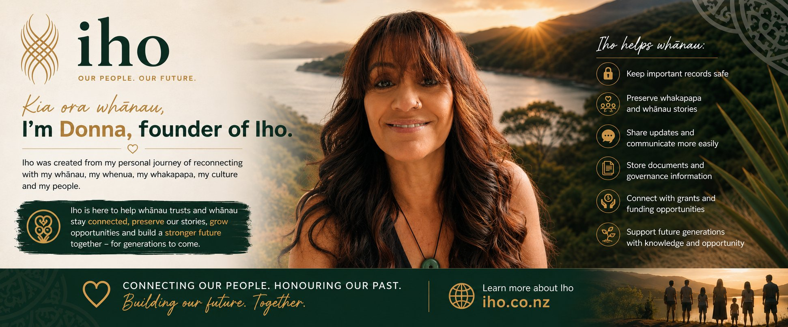

Iho builds your trust a private digital home. Your land. Your whakapapa. Your people. All connected in one place.
We build your digital wharē and walk alongside your trust every step of the way. Your land. Your whakapapa. Your people. All in one place, for the generations still to come.
What could this land become? What could we build here, together, for our children and their children? The vision is clear. The feeling is real. But then comes the question that stops most whānau in their tracks.
Where do we even start?
You start with the whare.
Before the māra kai. Before the kaimoana. Before any of it. The whare is the foundation. It is where your whānau gathers, where decisions are made, where the plan gets built. Get the foundation right and everything else becomes possible.
That is what your digital wharē is. The foundation. The central hub from which the whole ecosystem gets mapped, resourced and built, one step at a time, at your pace, with your whānau.
We are not inventing something new. We are returning to something true with modern tools in our hands.
They grew kai, harvested kaimoana, lived on the whenua and passed knowledge through doing. The land and the people were one and the same.

The land is there. The kaimoana is there. The maunga is standing. What has been missing is the structure, the connection and the tools to activate it.
What if your mokopuna inherited something whole. A clear record of the land. The stories of the people. The knowledge of what had been built and why. Whatever your whenua holds, they deserve to know it and to build on it.

Every whānau has stories
worth protecting.
Iho keeps them safe for the generations still to come.
A digital wharē is your whānau trust's private online home a secure portal that brings everything together in one place, accessible to every whānau member wherever they are in the world.
Think of it as the marae of your digital world. A place to gather, share, preserve and act built around the specific needs of your trust and your whānau.
All your trust's land blocks, shares and succession clearly laid out. Know exactly what your whānau owns and where it is.
Unclaimed dividends, succession rights and benefits sitting untouched for years surfaced by our research tools.
Your digital wharē includes a built-in grants research tool that helps your trust identify and explore funding sources that may be relevant to your situation and goals.
Beneficiaries anywhere in the world stay connected through your private portal. News, decisions and history in one trusted space.
Your whakapapa, stories, photographs and land history kept safe for every generation. What your kaumātua carry in memory preserved forever.
Your digital wharē can surface local digital access initiatives in your region, helping whānau who are not yet online get connected. Programmes like Skinny Jump are a great example of what exists in some areas.
This model extends further. Everything built for a whānau trust applies to a marae, a hapū or an iwi. The foundations are the same the application is yours to shape.
Register interestEvery whānau trust is different. Every piece of whenua is different. What we share here comes from our own experience on our own land. We are not saying your trust will do these things. We are saying these things became visible to us once we had the tools to look properly. Your whenua may hold possibilities you have not yet been able to see.
Your digital wharē is where that seeing begins.
On our whenua we saw the possibility of growing food to sustain our whānau and perhaps generate income over time. Your land may offer something similar or something completely different. Your digital wharē helps you understand what you have to work with and connect to resources that support it.
Not every trust has land that can support housing. But for those that do, papakāinga is a powerful possibility. Your digital wharē brings together the land records, succession information and documentation that make those conversations with whānau and authorities easier to have.
We have thought about what our whenua could support beyond just the land itself. Markets, food, shared skills, local enterprise. We do not know yet what will come of all of it. But we know that having the foundation organised means we can now ask those questions seriously and share the opportunities with whānau when they come.
Whānau living away still have a stake in the whenua. Your digital wharē keeps them in the loop on every decision, every opportunity and every milestone so the ecosystem belongs to all of them, not just those physically present.
The vision is rooted in who you are and where you come from. Your digital wharē preserves the stories, the land history and the whakapapa that give the ecosystem its meaning and its mana.
Raranga, māra kai, kaimoana practices, tikanga, te reo. Your digital wharē is where that knowledge lives, where tamariki can find it and where the next generation inherits it with intention.
We do not know exactly what your whenua holds. But we know you deserve the tools to find out.
Register your interest5,400 trusts. Most still running on paper, phone calls and memory. Iho was built because we lived these problems from the inside of our own whānau trust.
Whānau have no visibility of what the trust owns, what decisions are made, or what money comes in.
Important news travels by word of mouth or not at all. Beneficiaries living away feel cut off.
Unclaimed dividends. Grants nobody applies for. Money the trust never knows it has.
The trust's history lives in one kaumātua's memory. When they pass, decades of whakapapa goes with them.
Documents, court orders and minutes scattered across shoeboxes, inboxes and old hard drives.
Many trusts hold whenua that could be doing more. Without the right information and tools, it is hard to even know where to begin.
Proven on our own whānau trust what had stalled for decades was completed in days.
Helps your trust explore and identify funding sources relevant to your goals and situation
Your land blocks, shares and unclaimed interests surfaced
Guides succession and flags what needs action now
Court submissions and trustee reports ready to send
Court records and connections found in minutes
Dividends and entitlements sitting unclaimed, surfaced
Most whānau trusts cannot invest in digital tools from their own pocket. Iho solves that.
Using the grants research tool inside your digital wharē, we help your trust explore funding sources that may support your goals. Your trust is guided through what is available and relevant.
Guided researchOnce funded, we build your private digital wharē customised with your whakapapa, land, documents and history.
Built for youWith your trust organised and your whānau connected, you can start to explore what your whenua holds. Every trust is different. Your digital wharē gives you the foundation to ask the right questions and find your own answers.
Ongoing supportWhen you invest in Iho, you are seeding a multiplier that activates whānau trusts across the country each one unlocking their own grants, opportunities and futures.
"We are a grant-funded business that teaches grant-seeking to others. Every dollar you invest in Iho multiplies across the whānau trusts we serve."
DONNA SMITH FOUNDER, IHO
Request a funder briefingIho receives seed grant funding and builds the platform
Each whānau trust joins with a grant Iho helped them secure
Each trust uses Iho's tools to access more funding for trust activities
Each trust becomes financially capable, well-governed and self-directed
Hundreds of trusts. Thousands of whānau. One investment at the start.

"I am building this for our own whānau and whenua first. Because the only honest way to bring something to your people is to prove it works at home. That is what Iho is. Built from the inside out, with aroha."
Donna SmithFounder, Iho. Trustee, whānau trust. Ngāi Te Rangi, Tauwhao hapū.
Iho was created from my personal journey of reconnecting with my whānau, my whenua, my whakapapa, my culture and my people. I know the challenges. I understand the responsibility. I watched our trust struggle for years with no accessible records, no way to keep whānau informed, no guidance on what support was available. So I built a digital wharē for our own trust first. Now I want every trust in Aotearoa to have what we built.
We are piloting on our own whenua first and building our waitlist. Register now and be first in line. Every registration shows funders that real demand exists across Aotearoa.
Your trust pays nothing to register. We will be in touch when we are ready for you.
We will be in touch once our pilot is complete.
Questions? donna@iho.co.nz